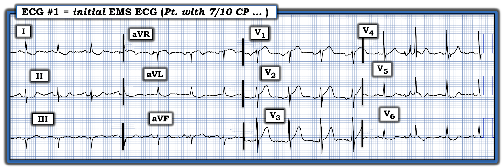
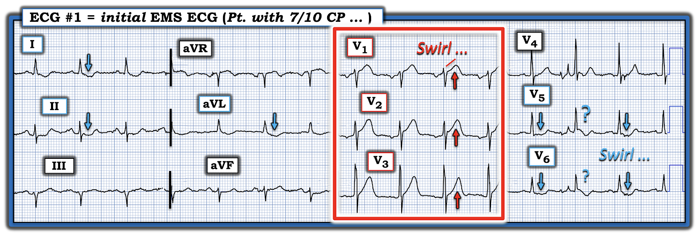
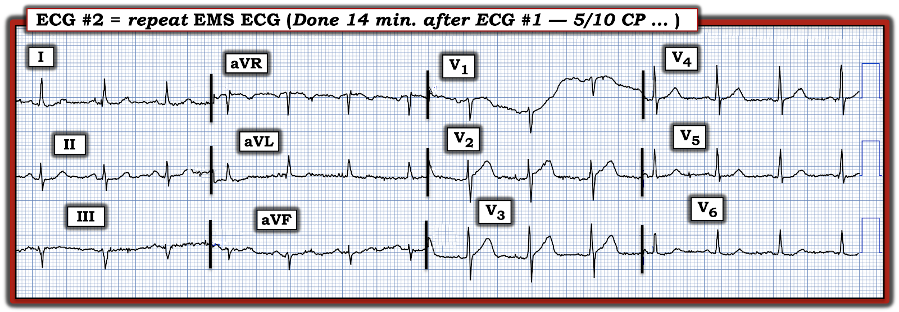
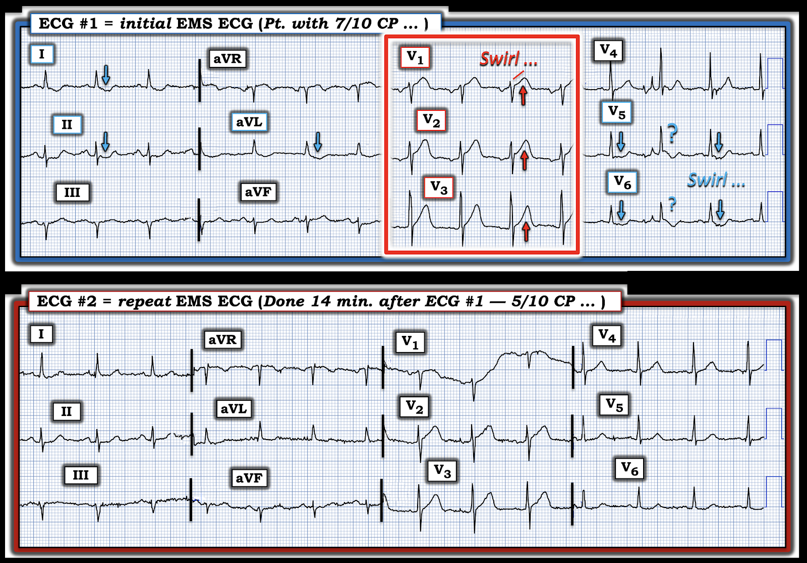
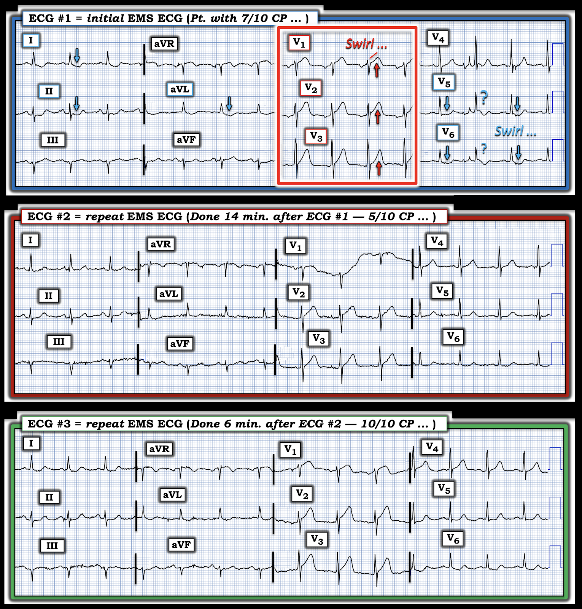

ECG Blog #482 — Bệnh nhân này đã được dùng morphin
======================================
Xin LƯU Ý:
- Sau hôm nay — không có bài ECG Blog mới trong 3 đến 4 tuần ...
- — Tôi cũng sẽ không trả lời email kịp thời ...
======================================
Toàn bộ tài liệu trên trang ECG Blog này vẫn mở!
- Thẻ INDEX (ở góc trên bên phải mỗi trang) — có Mục lục liên kết, sắp xếp theo chủ đề. Vì vậy NẾU bạn đang tìm tài liệu về điện tâm đồ — Trên trang web này có rất nhiều!
- Và — NẾU bạn nhìn lên ĐẦU mỗi trang của blog này — Bạn sẽ thấy một Trình đơn gồm các Thẻ liên kết tới nhiều mục của blog, gồm các podcast điện tâm đồ của tôi, Audio & Video, hơn 100 giản đồ bậc thang (laddergram) có giải thích, và hàng trăm Bình luận của tôi trên ECG Blog của Dr. Smith. — RẤT NHIỀU thứ để xem lại "khi bạn rảnh".

==============================
ECG Blog #482 — Bệnh nhân này đã được dùng morphin ...
==============================
Điện tâm đồ ở Hình-1 — được ghi từ một người đàn ông ngoài 60 tuổi, gọi đội cấp cứu ngoài viện (EMS) sau nửa đêm một lúc vì đau ngực mới khởi phát (CP — Chest Pain).
- Bệnh nhân có các yếu tố nguy cơ, gồm tăng huyết áp, rối loạn lipid máu, đái tháo đường — và gần đây có những cơn khó chịu ở ngực nghe giống cơn đau thắt ngực.
- Bệnh nhân ổn định huyết động khi đội EMS đến. Ông cho biết mức độ đau ngực = 7/10 vào thời điểm ghi điện tâm đồ ban đầu .
CÂU HỎI:
- Bạn diễn giải điện tâm đồ ban đầu ở Hình-1 như thế nào?
- — Bạn có kích hoạt phòng thông tim (cath lab) không?


Suy nghĩ của tôi về điện tâm đồ ban đầu:
Xét bệnh sử đáng lo ngại của ca hôm nay, với đau ngực nặng (7/10) đang tiếp diễn — điện tâm đồ #1 cực kỳ đáng lo ngại:
- Có nhiễu đường nền ở một số chuyển đạo — nhưng bản ghi vẫn đọc được.
- Nhịp xoang, tần số ~85 lần/phút. Tất cả các khoảng (PR,QRS,QTc) đều bình thường. Trục mặt phẳng trán lệch trái — nhưng chưa đủ để đạt tiêu chuẩn LAHB (vì QRS ở chuyển đạo II vẫn chủ yếu dương). Không có lớn các buồng tim.
Về Thay đổi sóng Q-R-S-T:
- Sóng Q — Khó biết có (hay không có) sóng Q ở chuyển đạo III (Phức bộ thứ 1 và thứ 3 ở chuyển đạo này có một sóng r nhỏ ở đầu — nhưng phức bộ giữa thì không).
- Tăng tiến sóng R — bình thường, với vùng chuyển tiếp (nơi sóng R trở nên cao hơn độ sâu của sóng S) xuất hiện bình thường, ở đây là giữa chuyển đạo V2 đến V3.
Còn sóng ST-T?
Ở bệnh nhân này với đau ngực mới đáng lo ngại (vẫn 7/10 vào lúc điện tâm đồ #1 được ghi) — có bất thường sóng ST-T (abns. — abnormalities) ở hầu như cả 12 chuyển đạo:
- “Mắt” tôi lập tức bị hút vào 3 chuyển đạo nằm trong hình chữ nhật ĐỎ (chuyển đạo V1,V2,V3 — như trong Hình-2). Bản ghi này không có LVH (tức là không có sóng R cao ở bất kỳ chuyển đạo bên nào — và không có sóng S sâu ở chuyển đạo V1,V2). Do đó đoạn ST thẳng đuỗn với đỉnh sóng T “đầy đặn” hơn mong đợi, cùng với ~1 mm. ST chênh lên tại điểm J ở chuyển đạo V1 rõ ràng là bất thường.
- Xét biên độ sóng R khiêm tốn ở chuyển đạo V2 — ST chênh lên gần 2 mm. với sóng ST-T quá lớn và “đồ sộ” ở chuyển đạo này cũng là một thay đổi tối cấp cho đến khi chứng minh được điều ngược lại.
- Trong bối cảnh của chuyển đạo V1,V2 — sóng T ở chuyển đạo V3 cũng có vẻ “quá đầy đặn” (hypervoluminous) ( = tối cấp).
- ST chênh xuống dạng dẹt (nếu không muốn nói là dạng lõm) thấy ở 2 trong 3 phức bộ QRST ở các chuyển đạo trước tim bên V5,V6 (mũi tên XANH ở các chuyển đạo này).
- Chuyển đạo V4 bị nhiễu làm biến dạng — nhưng có vẻ biểu hiện ST dẹt. Khó biết điều này có ý nghĩa gì, do chuyển đạo V3 ở vị trí chuyển tiếp giữa 3 chuyển đạo trước (có ST chênh lên với sóng T tối cấp) — và 2 chuyển đạo trước tim bên (có ST chênh xuống “dạng lõm” ở bệnh nhân này, người không có dấu hiệu LVH trên điện tâm đồ).
- Ở các chuyển đạo chi — 2 chuyển đạo bên (chuyển đạo I và aVL) — cũng như chuyển đạo II bổ sung cho hình ảnh sóng ST-T chênh xuống thấy ở các chuyển đạo trước tim bên (mũi tên XANH ở các chuyển đạo chi này).
- Sóng ST-T ở chuyển đạo III và aVF không đặc hiệu — nhưng biểu hiện sóng ST-T dẹt.
==============================
NHẬN ĐỊNH CỦA TÔI về điện tâm đồ #1:
Ở bệnh nhân này với đau ngực mới và dai dẳng — điện tâm đồ ban đầu hôm nay gợi ý mạnh OMI trước vách cấp. Riêng điện tâm đồ này (không cần kết quả Troponin) — lẽ ra đã phải thúc đẩy bác sĩ can thiệp đưa bệnh nhân lên phòng thông tim. Đáng tiếc, điều này đã không được thực hiện — vì nhóm tim mạch cho rằng "chưa đạt tiêu chuẩn STEMI".
- Xem PHẦN BỔ SUNG bên dưới để biết thêm về khái niệm OMI cấp (nhồi máu cơ tim cấp do tắc động mạch vành cấp) — so với mô hình STEMI đã lỗi thời. Bất kể giá trị Troponin ban đầu có tăng hay không (Troponin ban đầu sẽ bình thường ở một số lượng đáng ngạc nhiên bệnh nhân bị tắc động mạch vành cấp) — và bất kể các điện tâm đồ tiếp theo có thể cho thấy gì — điện tâm đồ #1 là chẩn đoán OMI LAD cấp ở bệnh nhân đau ngực dai dẳng này cho đến khi chứng minh được điều ngược lại. Thông tim sớm kèm PCI rõ ràng là có chỉ định.
- Không chỉ là OMI LAD cấp — hình ảnh điện tâm đồ với sóng ST-T tối cấp và chênh lên ở chuyển đạo V1,V2,V3 + ST chênh xuống dạng lõm ở chuyển đạo V5,V6 — gợi ý mạnh có "Xoáy" trước tim (Precordial Swirl) (Xem bên dưới Hình-2).


Thế nào là Xoáy trước tim ("Precordial Swirl")?
Như tôi đã ôn lại trong ECG Blog #380 — thuật ngữ giàu hình ảnh mang tên Xoáy trước tim — là một dấu hiệu điện tâm đồ thú vị, giúp nhận ra một hình ảnh điện tâm đồ đặc biệt gợi ý mạnh vị trí rất gần gốc của tắc LAD cấp (thường ở đoạn gần trước nhánh xuyên vách thứ 1) — gây thiếu máu cục bộ vách, cùng với tổn thương thành trước và mỏm tim.
ĐIỂM THEN CHỐT (PEARL) #1: Trong bối cảnh OMI LAD cấp (nhồi máu cơ tim do tắc ) — hình ảnh Xoáy trước tim được nhận ra khi thấy ST chênh lên ở chuyển đạo V1 (và thường cả ở chuyển đạo aVR) — và — ST chênh xuống soi gương ở chuyển đạo V5 và V6.
- Khi cân nhắc Xoáy trước tim — tôi thích tập trung vào hình dạng sóng ST-T ở chuyển đạo V1 và V6.
- Mặc dù ST chênh lên dốc lên 1-2 mm thường gặp (và là bình thường) ở các chuyển đạo trước V2 và V3 — phần lớn trường hợp chúng ta không thấy ST chênh lên ở chuyển đạo V1 (hoặc nếu có — thì rất ít). Vì vậy — tôi lập tức nghi ngờ "Xoáy trước tim" bất cứ khi nào có gợi ý OMI LAD — và — thêm vào đó, chuyển đạo V1 trông khác so với mong đợi!
- LƯU Ý #1: Đôi khi việc nhận ra chuyển đạo V1 trông "khác so với mong đợi" — chỉ đến sau khi nhận thấy chuyển đạo V2 rõ ràng bất thường.
- LƯU Ý #2: Rất dễ bị LVH đánh lừa! Đó là vì hình ảnh "tăng gánh" thất trái (LV strain) kèm LVH đôi khi biểu hiện rõ ở các chuyển đạo trước hơn là ở các chuyển đạo trước tim bên — khi đó có thể có ST chênh lên ở chuyển đạo trước (tức là hình soi gương của sóng ST-T chênh xuống ở chuyển đạo bên). Dù vậy — ca hôm nay không có dấu hiệu LVH.
- Cuối cùng, một khi tôi đã xác định bản ghi đang xem không phải là một ví dụ LVH giả Xoáy trước tim — tôi tập trung sự chú ý vào hình dạng sóng ST-T ở chuyển đạo V6 (thường dẹt hơn, nếu không muốn nói là dạng lõm — so với đoạn ST dốc xuống điển hình hơn của "tăng gánh" thất trái).
==============================
Ca bệnh tiếp diễn:
Trên đường vận chuyển, đội EMS đã điều trị cho bệnh nhân bằng ASA và NTG ngậm dưới lưỡi.
- Sau NTG — đau ngực giảm xuống 5/10 (từ mức ban đầu 7/10).
- Một điện tâm đồ ghi lại được thực hiện (điện tâm đồ #2 ở Hình-3).


CÂU HỎI:
- BẠN sẽ diễn giải điện tâm đồ ghi lại ở Hình-3 như thế nào?
==============================
ĐIỂM THEN CHỐT (PEARL) #2:
- Chẳng phải rất khó đánh giá điện tâm đồ #2 so với điện tâm đồ #1 (ghi ~14 phút trước đó) — nếu không đặt hai điện tâm đồ này cạnh nhau sao?
- Bây giờ hãy NHÌN Hình-4 — trong đó tôi đã đặt hai bản ghi này cạnh nhau. Chẳng phải giờ đây so sánh từng chuyển đạo một dễ hơn nhiều — khi đối chiếu 2 bản ghi này sao?


So sánh điện tâm đồ ban đầu hôm nay — với điện tâm đồ ghi lại:
Xem từng chuyển đạo một — tôi ghi nhận như sau:
- Tập trung trước tiên vào 3 chuyển đạo lúc đầu đã thu hút sự chú ý của tôi (chuyển đạo V1,V2,V3 — trong hình chữ nhật ĐỎ ở điện tâm đồ #1) — rõ ràng các sóng ST-T tối cấp vùng trước vách đã "xẹp" xuống ở điện tâm đồ #2.
- ST chênh xuống rõ ràng đã giảm ở 5 chuyển đạo có mũi tên XANH ở điện tâm đồ #1.
- ĐIỂM THEN CHỐT (PEARL) #3: Sự cải thiện hình dạng sóng ST-T ở hầu như tất cả các chuyển đạo trên điện tâm đồ #2 (so với điện tâm đồ #1) — cho thấy đây là thay đổi sóng ST-T "động" (dynamic). Dấu hiệu này, xảy ra cùng lúc với mức độ đau ngực của bệnh nhân giảm đi — gợi ý mạnh đã có tái thông tự phát động mạch "thủ phạm".
- ĐIỀU CỐT LÕI: Nếu trước đó còn nghi ngờ về chỉ định thông tim sớm ở ca hôm nay — thì dấu hiệu thay đổi sóng ST-T động đi kèm với đau ngực giảm lẽ ra đã phải xóa tan mọi nghi ngờ.
==============================
Ca bệnh tiếp diễn:
Nhóm tim mạch vẫn không muốn thông tim vì "vẫn chưa đạt tiêu chuẩn STEMI".
- Đau ngực của bệnh nhân tái phát (giờ là 10/10! ) — và điện tâm đồ thứ 3 được ghi (Xem so sánh cạnh nhau 3 điện tâm đồ của ca hôm nay ở Hình-5).
- Khoa tim mạch vẫn không muốn thông tim.
- Thay vào đó — bệnh nhân được dùng morphin để giảm đau ngực.
CÂU HỎI:
- Bạn rút ra được gì từ Hình-5?


Chúng ta rút ra được gì từ các điện tâm đồ liên tiếp ở Hình-5:
Ở Hình-4 — Chúng ta đã thấy điện tâm đồ #2 cải thiện ở hầu như tất cả các chuyển đạo, xảy ra cùng lúc với đau ngực giảm.
- Giờ đây chỉ 6 phút sau ở điện tâm đồ #3 — đau ngực của bệnh nhân đã tái phát với mức độ còn nặng hơn (đau ngực 10/10! ). Các thay đổi sóng ST-T tối cấp mà chúng ta thấy ở điện tâm đồ #1 (vốn đã cải thiện đáng kể vào lúc ghi điện tâm đồ #2) — nay đã quay trở lại, kèm theo ST chênh xuống ở các chuyển đạo bên.
- So với biên độ QRS ở chuyển đạo V1 đến V4 — có vẻ kích thước sóng T ở 4 chuyển đạo này thậm chí còn lớn hơn so với điện tâm đồ #1.
- ĐIỀU CỐT LÕI: Đau ngực tái phát, nay ngày càng nặng — đi kèm với sự quay trở lại của các thay đổi sóng ST-T cấp ở hầu như tất cả các chuyển đạo — gợi ý mạnh rằng LAD "thủ phạm" nay đã tự phát tắc lại.
- Lưu ý: Đau ngực của bệnh nhân này đạt cường độ 10/10 mặc dù đã dùng morphin. Đây không phải là cách làm tốt — vì morphin thường sẽ làm giảm (làm dịu) đau ngực do thiếu máu cục bộ, từ đó tạo ra sự yên tâm giả tạo rằng bệnh nhân đang "cải thiện" — trong khi thực tế, tất cả những gì morphin làm là che lấp các triệu chứng thiếu máu cục bộ của bệnh nhân (từ đó trì hoãn nhu cầu thông tim và điều trị triệt để).
- ĐIỂM THEN CHỐT (PEARL) #4: Chỉ nên dùng morphin sau khi đã quyết định thông tim sớm. Đến lúc đó — dùng morphin rộng rãi để giảm đau ngực là điều đáng hoan nghênh!
- ĐIỂM THEN CHỐT (PEARL) #5: Morphin lẽ ra đã có thể được dùng một cách phù hợp sớm hơn hơn 2 giờ nếu quyết định thông tim sớm được đưa ra đúng đắn sau khi xem điện tâm đồ #1 (hoặc muộn nhất — sau khi thấy các thay đổi sóng ST-T "động" trên điện tâm đồ #2).
- ĐIỂM THEN CHỐT (PEARL) #6: ĐIỂM THEN CHỐT cuối cùng hôm nay — về cơ bản là nhắc lại ĐIỂM THEN CHỐT #2 — để nhấn mạnh việc so sánh các điện tâm đồ liên tiếp dễ dàng hơn biết bao (và tiết kiệm thời gian hơn biết bao) khi đặt các bản ghi đang xem cạnh nhau, rồi xem xét từng chuyển đạo một. Đánh giá các điện tâm đồ liên tiếp là cả một "nghệ thuật" — vì bạn phải tính đến những khác biệt có thể có về trục mặt phẳng trán, tăng tiến sóng R (cùng ảnh hưởng của nó lên hình dạng QRST), và mọi thay đổi có thể do nhiễu nhiều hơn hay ít hơn ở (các) chuyển đạo đang xem. Nhưng liệu có thể còn chút nghi ngờ nào về các thay đổi sóng ST-T "động" mà chúng ta thấy ở Hình-5, tương quan hoàn hảo với sự thay đổi mức độ đau ngực tương đối?
==============================
KẾT LUẬN CA BỆNH:
Đáng tiếc — tôi không thể có được thông tin theo dõi đầy đủ. Nhưng tôi đã biết được những điều sau.
- Bệnh nhân tiếp tục đau ngực mặc dù đã dùng morphin và NTG tĩnh mạch. Vì vậy — cuối cùng ông đã được đưa đi thông tim. Điều này đặt ra câu hỏi liệu bệnh nhân có được đưa đi thông tim hay không nếu morphin đã làm giảm triệu chứng của ông!
- Động mạch "thủ phạm" được xác nhận là LAD (và với hình ảnh "Xoáy" trên điện tâm đồ — tôi dám cược đây là một tổn thương LAD rất gần gốc).
- Đáng tiếc — phải mất gần 3 giờ sau điện tâm đồ #1 thì mới đưa ra được quyết định thông tim. Thời gian là cơ tim — nên người ta chỉ có thể tự hỏi bao nhiêu cơ tim còn khả năng sống đã bị mất vì sự chậm trễ này.
==================================
Lời cảm ơn: Tôi xin cảm ơn Noah Steege (từ Virginia, Hoa Kỳ) đã chia sẻ ca bệnh và bản ghi này.
==================================
==================================
PHẦN BỔ SUNG (17/5/2025):
- Thêm tài liệu — về đọc điện tâm đồ trong các OMI (không đạt tiêu chuẩn STEMI dựa trên milimét).

- Trong "My ECG Podcasts" — Hãy xem ECG Podcast #2 (Những lỗi đọc điện tâm đồ dẫn tới bỏ sót tắc động mạch vành cấp).
- Trong 'My ECG Videos" — Hãy xem gần đầu trang đó các VIDEO từ các buổi nói chuyện về điện tâm đồ của tôi trên MedAll, ôn lại chẩn đoán nhồi máu cơ tim cấp trên điện tâm đồ — và cách nhận ra OMI cấp khi không đạt tiêu chuẩn STEMI (được ôn lại trong ECG Blog #406 — Blog #407 — Blog #408).
- Xin LƯU Ý — Với mỗi video trong 6 video MedAll ở đầu trang My ECG Videos, NẾU bạn bấm vào "More" trong phần mô tả, bạn sẽ có một Mục lục liên kết cho phép nhảy tới phần bàn luận các điểm cụ thể (tức là tại 5:29 trong video 22 phút của Blog #406 — bạn có thể nhảy tới "Bạn CÓ THỂ nhận ra OMI mà không cần dấu hiệu STEMI!" ).
T.B. (P.S.): Về một ca bệnh đáng suy ngẫm, gợi nhiều suy nghĩ do bác sĩ tim mạch Dr. Willy Frick trình bày — kèm Bình luận của tôi ở cuối trang (trong bài ngày 17 tháng 3 năm 2025) — Hãy xem ca này.
- Như Dr. Frick và tôi nhấn mạnh — không chỉ "mô hình STEMI" hiện hành đã lỗi thời — mà trong những ca như ca chúng tôi mô tả, vì nhân viên y tế chờ cho đến khi cuối cùng đạt tiêu chuẩn STEMI — nên thông tim và PCI đã bị trì hoãn hơn 1 ngày.
- NHƯNG — vì phòng thông tim được kích hoạt "trong vòng 1 giờ" kể từ điện tâm đồ cuối cùng đã đạt tiêu chuẩn STEMI — ca này sẽ được ghi vào các sổ đăng ký nghiên cứu là "rất thành công với kích hoạt nhanh phòng thông tim trong vòng 1 giờ kể từ khi xác định "STEMI". Cách diễn giải sai lầm này về diễn biến sự việc hoàn toàn bỏ qua thực tế lâm sàng rằng bệnh nhân này đã mất một cách không cần thiết một lượng cơ tim đáng kể vì điện tâm đồ ban đầu (ghi >24 giờ trước đó) rõ ràng đã chẩn đoán STEMI(-)/OMI(+) nhưng không được xử trí vì nhân viên y tế "mắc kẹt" vào quy trình STEMI.
- Hậu quả đáng tiếc là tạo ra "bằng chứng ủng hộ" sai lầm trong y văn, gợi ý tính đúng đắn của một mô hình đã lỗi thời và không còn chính xác.
- Thực tế lâm sàng: Nhiều trường hợp tắc động mạch vành cấp không bao giờ xuất hiện ST chênh lên (hoặc chỉ xuất hiện ST chênh lên muộn trong diễn tiến) — trong khi chú ý tới các tiêu chuẩn điện tâm đồ bổ sung trong các tài liệu tham khảo nêu trên có thể giúp chúng ta nhận ra OMI cấp ở nhiều ca STEMI(-) này tại một thời điểm sớm đáng ngạc nhiên trong diễn tiến lâm sàng của bệnh nhân.
==========================